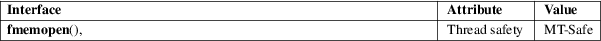

fmemopen − open memory as stream
Standard C library (libc, −lc)
#include <stdio.h>
FILE *fmemopen(void buf[.size], size_t size, const char *mode);
Feature Test Macro Requirements for glibc (see feature_test_macros(7)):
fmemopen():
Since glibc 2.10:
_POSIX_C_SOURCE >= 200809L
Before glibc 2.10:
_GNU_SOURCE
The fmemopen() function opens a stream that permits the access specified by mode. The stream allows I/O to be performed on the string or memory buffer pointed to by buf.
The mode argument specifies the semantics of I/O on the stream, and is one of the following:
|
r |
The stream is opened for reading. | ||
|
w |
The stream is opened for writing. | ||
|
a |
Append; open the stream for writing, with the initial buffer position set to the first null byte. | ||
|
r+ |
Open the stream for reading and writing. | ||
|
w+ |
Open the stream for reading and writing. The buffer contents are truncated (i.e., '\0' is placed in the first byte of the buffer). | ||
|
a+ |
Append; open the stream for reading and writing, with the initial buffer position set to the first null byte. |
The stream maintains the notion of a current position, the location where the next I/O operation will be performed. The current position is implicitly updated by I/O operations. It can be explicitly updated using fseek(3), and determined using ftell(3). In all modes other than append, the initial position is set to the start of the buffer. In append mode, if no null byte is found within the buffer, then the initial position is size+1.
If buf is specified as NULL, then fmemopen() allocates a buffer of size bytes. This is useful for an application that wants to write data to a temporary buffer and then read it back again. The initial position is set to the start of the buffer. The buffer is automatically freed when the stream is closed. Note that the caller has no way to obtain a pointer to the temporary buffer allocated by this call (but see open_memstream(3)).
If buf is not NULL, then it should point to a buffer of at least size bytes allocated by the caller.
When a stream that has been opened for writing is flushed (fflush(3)) or closed (fclose(3)), a null byte is written at the end of the buffer if there is space. The caller should ensure that an extra byte is available in the buffer (and that size counts that byte) to allow for this.
In a stream opened for reading, null bytes ('\0') in the buffer do not cause read operations to return an end-of-file indication. A read from the buffer will indicate end-of-file only when the current buffer position advances size bytes past the start of the buffer.
Write operations take place either at the current position (for modes other than append), or at the current size of the stream (for append modes).
Attempts to write more than size bytes to the buffer result in an error. By default, such errors will be visible (by the absence of data) only when the stdio buffer is flushed. Disabling buffering with the following call may be useful to detect errors at the time of an output operation:
setbuf(stream, NULL);
Upon successful completion, fmemopen() returns a FILE pointer. Otherwise, NULL is returned and errno is set to indicate the error.
For an explanation of the terms used in this section, see attributes(7).

POSIX.1-2008.
glibc 1.0.x. POSIX.1-2008.
POSIX.1-2008 specifies that 'b' in mode shall be ignored. However, Technical Corrigendum 1 adjusts the standard to allow implementation-specific treatment for this case, thus permitting the glibc treatment of 'b'.
With glibc 2.22, binary mode (see below) was removed, many longstanding bugs in the implementation of fmemopen() were fixed, and a new versioned symbol was created for this interface.
Binary
mode
From glibc 2.9 to glibc 2.21, the glibc implementation of
fmemopen() supported a "binary" mode,
enabled by specifying the letter 'b' as the second character
in mode. In this mode, writes don’t implicitly
add a terminating null byte, and fseek(3)
SEEK_END is relative to the end of the buffer (i.e.,
the value specified by the size argument), rather
than the current string length.
An API bug afflicted the implementation of binary mode: to specify binary mode, the 'b' must be the second character in mode. Thus, for example, "wb+" has the desired effect, but "w+b" does not. This is inconsistent with the treatment of mode by fopen(3).
Binary mode was removed in glibc 2.22; a 'b' specified in mode has no effect.
There is no file descriptor associated with the file stream returned by this function (i.e., fileno(3) will return an error if called on the returned stream).
Before glibc 2.22, if size is specified as zero, fmemopen() fails with the error EINVAL. It would be more consistent if this case successfully created a stream that then returned end-of-file on the first attempt at reading; since glibc 2.22, the glibc implementation provides that behavior.
Before glibc 2.22, specifying append mode ("a" or "a+") for fmemopen() sets the initial buffer position to the first null byte, but (if the current position is reset to a location other than the end of the stream) does not force subsequent writes to append at the end of the stream. This bug is fixed in glibc 2.22.
Before glibc 2.22, if the mode argument to fmemopen() specifies append ("a" or "a+"), and the size argument does not cover a null byte in buf, then, according to POSIX.1-2008, the initial buffer position should be set to the next byte after the end of the buffer. However, in this case the glibc fmemopen() sets the buffer position to −1. This bug is fixed in glibc 2.22.
Before glibc 2.22, when a call to fseek(3) with a whence value of SEEK_END was performed on a stream created by fmemopen(), the offset was subtracted from the end-of-stream position, instead of being added. This bug is fixed in glibc 2.22.
The glibc 2.9 addition of "binary" mode for fmemopen() silently changed the ABI: previously, fmemopen() ignored 'b' in mode.
The program below uses fmemopen() to open an input buffer, and open_memstream(3) to open a dynamically sized output buffer. The program scans its input string (taken from the program’s first command-line argument) reading integers, and writes the squares of these integers to the output buffer. An example of the output produced by this program is the following:
$ ./a.out '1
23 43'
size=11; ptr=1 529 1849
Program
source
#define _GNU_SOURCE
#include <err.h>
#include <stdio.h>
#include <stdlib.h>
#include <string.h>
int
main(int argc, char *argv[])
{
FILE *out, *in;
int v, s;
size_t size;
char *ptr;
if (argc != 2)
{
fprintf(stderr, "Usage: %s '<num>...'\n",
argv[0]);
exit(EXIT_FAILURE);
}
in =
fmemopen(argv[1], strlen(argv[1]), "r");
if (in == NULL)
err(EXIT_FAILURE, "fmemopen");
out =
open_memstream(&ptr, &size);
if (out == NULL)
err(EXIT_FAILURE, "open_memstream");
for (;;) {
s = fscanf(in, "%d", &v);
if (s <= 0)
break;
s =
fprintf(out, "%d ", v * v);
if (s == −1)
err(EXIT_FAILURE, "fprintf");
}
fclose(in);
fclose(out);
printf("size=%zu; ptr=%s\n", size, ptr);
free(ptr);
exit(EXIT_SUCCESS);
}
fopen(3), fopencookie(3), open_memstream(3)